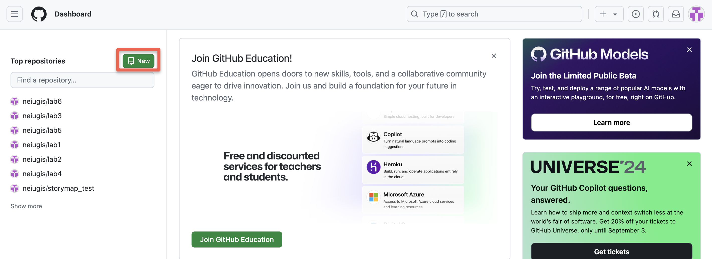
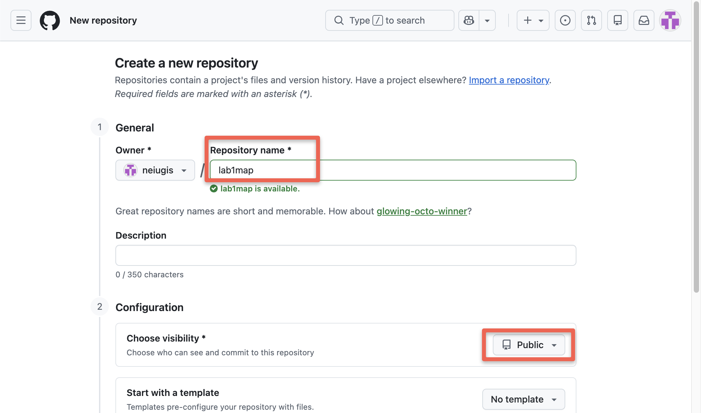
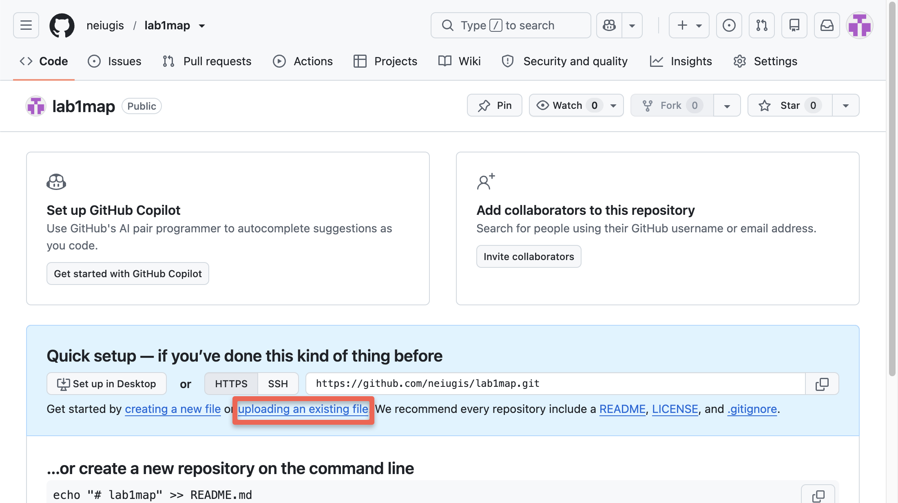
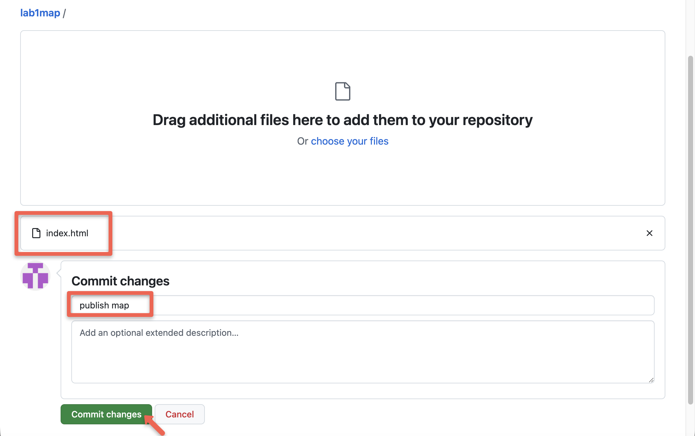
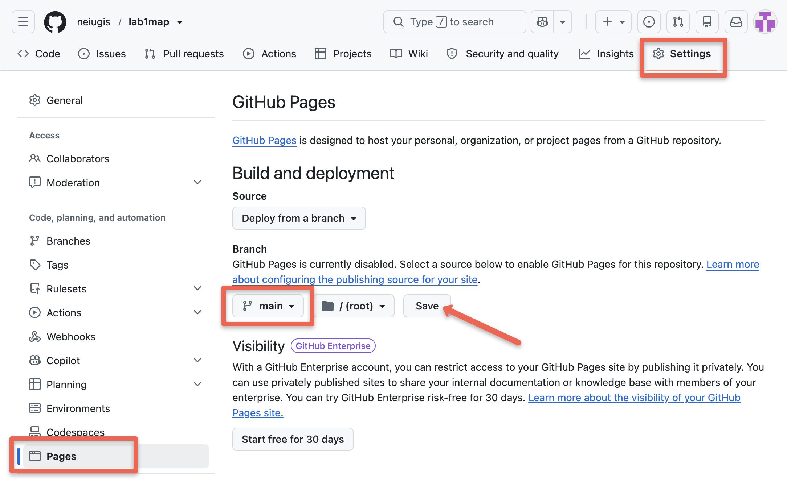
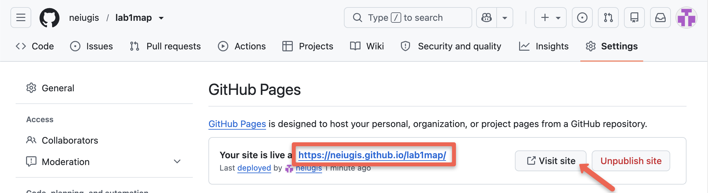
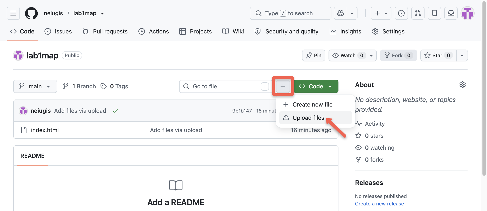

We will use the web version of GitHub to host a page for now, which is easier to get started. Whenever you are ready, we will shift to GitHub Desktop. Or you may continue using the web version if you prefer.
Video Walkthrough
This recording shows the same process as the written steps below, from creating a repository to opening the published map. It runs about seven and a half minutes. Use either one, or both.
Written Instructions
Go to github.com and sign up for a GitHub account. Check your email to verify your email account, OTHERWISE you may not be able to publish your web page.
In your GitHub home page, Click the New button under Repositories to create a new repository (think repository as a file folder on GitHub used to organize a single mapping project).

Next in the Create a new repository page (see below), name your repository (will appear in the map url). Make sure the visibility is set to Public. Then scroll down and click Create repository.

In the new repository, select uploading an existing file.

In your file folder, RENAME your final map to index.html and upload it to the GitHub repository. This is an important step as GitHub only recognizes index.html as the page to be published.
Under Commit changes, describe the change. Click Commit changes.

Once the processing is complete, you should see the index.html in your repository page.
Click the Settings tab, if you cannot see the "Settings" tab, select the dropdown menu, then click Settings.
On the sidebar, click Pages. Under Branch, use the dropdown menu to select main and click on the Save button. Then select the main branch as the Source and click on the Save button.

Refresh the site. To see your published site, under GitHub Pages, click Visit site.
Note: It can take up to several minutes for changes to your site to publish after you push the changes to GitHub. Refresh the site in a few minutes and check if the url appears.

Verify the url and make sure the map works as intended before submit.
Update Your Map After Publishing
You do not need to publish only once. You may upload a new version of your map as many times as you like, and the web address stays the same. This means you can publish an unfinished map today and replace it later. If you have already submitted the url, you do not need to submit it again.
Open the same repository on GitHub you published from. Do not create a new one.
Click Add file or the button, then select Upload files.

Upload your revised map. The file name must be index.html again, exactly as before. GitHub will replace the old file with the new one.
Under Commit changes, describe what you changed, for example changed basemap to CARTO Positron. Click Commit changes.
Wait a minute or two, then open your published url again to confirm the change appears.
If Your Published Page Does Not Change
Wait, then refresh. Publishing takes up to several minutes. Your repository will show the new file right away, but the published page updates a little later.
Clear the browser memory of the old page. Your browser saves a copy of pages you have already visited. Hold Shift and click the reload button, or press Ctrl and F5 together on Windows, or Command and Shift and R together on a Mac.
Check the file name. If the new file was named something else, such as index2.html or Index.html, the old index.html is still the page being published. Capital and lowercase letters count as different letters on GitHub.
Open the published url, not the file on your computer. It is easy to test the local copy by mistake and think nothing changed.